| mean_x | mean_y | std_dev_x | std_dev_y | corr_x_y |
|---|---|---|---|---|
| 54.26 | 47.83 | 16.77 | 26.94 | -0.06 |
14 Data Visualization
14.1 Types of Data Visualisation
Data visualization is an essential tool for understanding and communicating complex information. There are two main types of visualization: 1. Exploratory It is common to look at summary statistics such as mean and standard deviation. But these numbers obscure the datapoints hiding the form of our datasets. Matejka and Fitzmaurice generated datasets with Identical Statistics that look distinctly different. You can access all 12 patterns with datasauRus package. It is important to see the structure to move your analyses forward.
Show the code
datasauRus::datasaurus_dozen %>% filter(dataset %in% c("away","dino", "star")) %>%
mutate(dataset = str_to_upper(dataset)) %>%
ggplot(aes(x = x, y = y, colour = dataset)) +
geom_point() +
theme_void(base_size = 18) +
theme(legend.position = "none",
strip.text = element_text(face = "bold")) +
facet_wrap(~dataset, ncol = 3) +
coord_fixed(ratio = 0.8)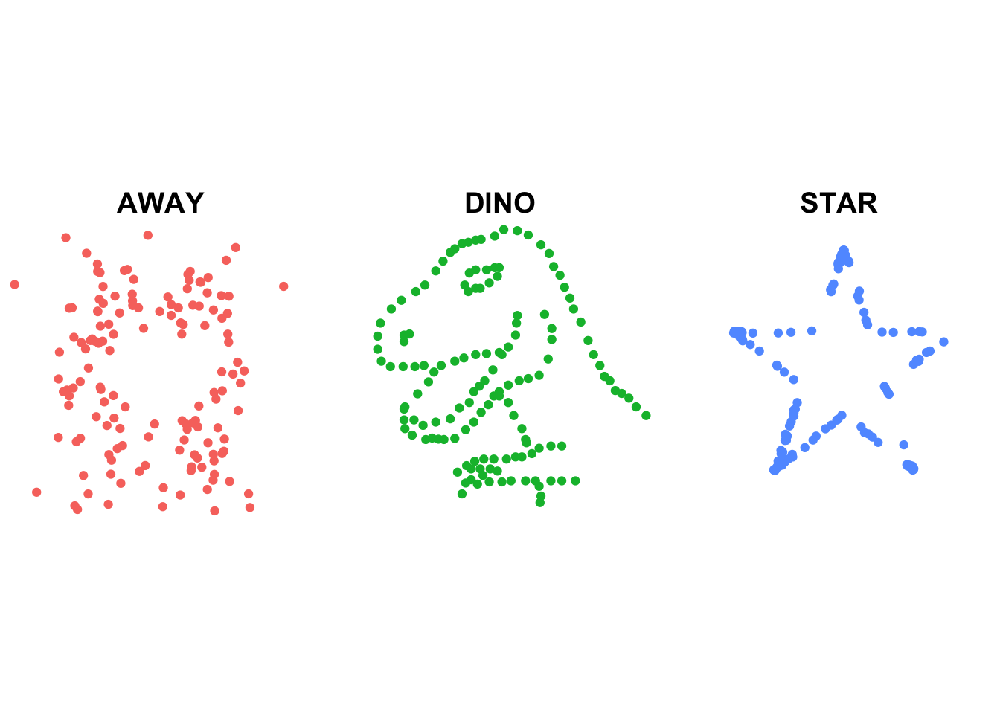
- Explanatory So, you got your results together and now you need to not only present them, but also convince non-techical audience. They don’t care whether your model user cross-validation or how you optimized your gradient boosted forest, all they want is a convincing simple message. That is why you won’t see fency overloaded graphs in forward facing presentation it all about the message. Look at the graph Apple used to show their M1 MacBooks are better.

R offers a variety of packages for creating visually appealing and informative plots. One of the most popular and versatile packages for data visualization in R is ggplot2. We will explore the basics of using ggplot2 to create different types of plots and customize them to suit your needs. We can load it separately libary(ggplot2) or with libary(tidyverse).
14.2 Grammar of Graphics
The Grammar of Graphics is a concept in data visualization that was developed by Leland Wilkinson in his book “The Grammar of Graphics” (The Grammar of Graphics 2005) in 1999. The Grammar of Graphics is essentially a system of rules that describes how to represent data visually using a set of graphical elements and mappings between data variables and visual properties.
The Grammar of Graphics. 2005. Statistics and Computing. New York: Springer-Verlag. https://doi.org/10.1007/0-387-28695-0.
“Excel Enjoyers” are familiar with the Excel plotting workflow: you select a plot you want and it just produces one for you.
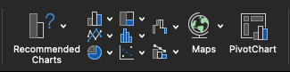
Under this framework scatter plot and bar plots appear completely different:
Show the code
point_plot <- data_raven %>% count(pr_correct, name = "count") %>% ggplot(aes(x = pr_correct, y = count)) + geom_point(size = 3) + theme_minimal()
col_plot <- data_raven %>% count(pr_correct, name = "count") %>% ggplot(aes(x = pr_correct, y = count)) + geom_col() + theme_minimal()
point_plot + col_plot
However, under the Grammar of Graphics we see how similar these graphics are! They are exactly the same in terms everything, but geometries! The first one use “points” while the second uses “columns” to display the data.
The Grammar of Graphics provides a framework for creating complex visualizations by breaking down the visualization process into a set of components.
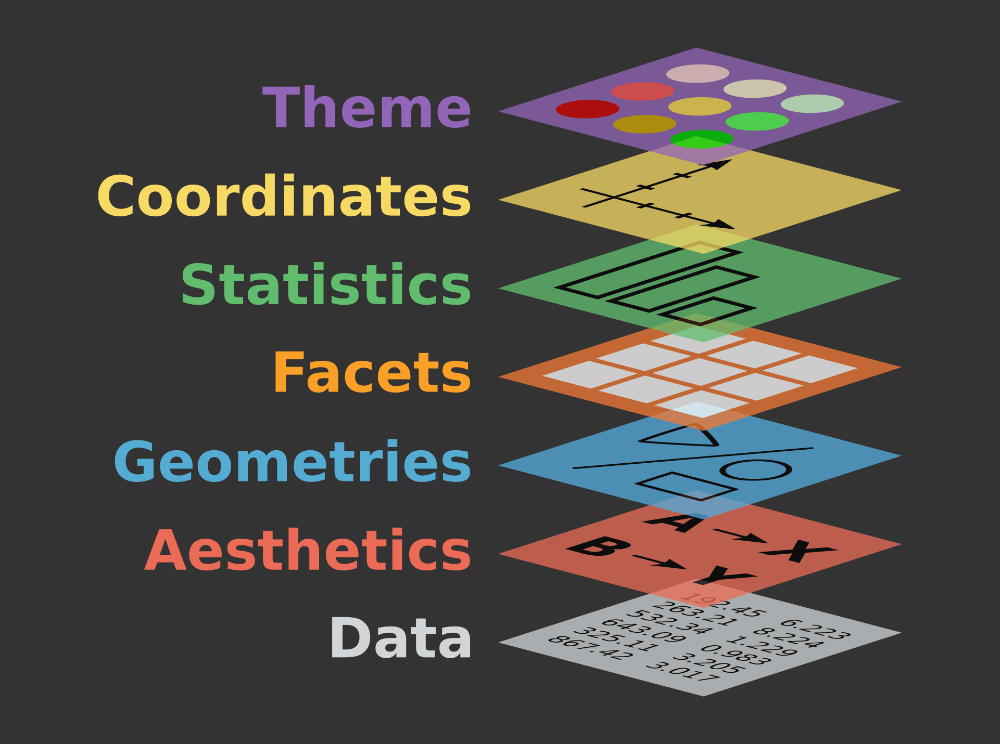
- Data: The information that is being visualized. To explore how grammar of graphics works in
ggplot2we will useirisdataset, which is a built-in dataset of measurements of different parts of iris flowers.
Sepal.Length Sepal.Width Petal.Length Petal.Width Species
1 5.1 3.5 1.4 0.2 setosa
2 4.9 3.0 1.4 0.2 setosa
3 4.7 3.2 1.3 0.2 setosa
4 4.6 3.1 1.5 0.2 setosa
5 5.0 3.6 1.4 0.2 setosa
6 5.4 3.9 1.7 0.4 setosaThe Data layer of the graph is just a blank canvas. Becase we have not specified any graphing elements yet.
data_layer <- ggplot(data = iris)
data_layer
- Aesthetics: The visual properties used to represent the data, such as x, y, color or size. Once we add aethetics we see out plotting area being set up and if we check mapping we see that
Sepal.Lengthwas assigned toxandSepal.Widthwas assigned toy.
aes_layer <- ggplot(data = iris,
aes(x = Sepal.Length, y = Sepal.Width))
aes_layer
aes_layer$mappingAesthetic mapping:
* `x` -> `Sepal.Length`
* `y` -> `Sepal.Width`- Geometries: The visual elements used to represent the data, such as points or bars. Once we add geometry we start seeing our data!
geometry_layer <- aes_layer + geom_point()
geometry_layer
- Scales: The mapping between the data and the aesthetics, such as how numeric values are mapped to positions on a graph. There are different scales for color, fill, size, log(x), etc. Here we added scale
color. Checking the mapping we seeSpeciesis mapped tocolour.
scales_layer <- ggplot(data = iris, aes(x = Sepal.Length, y = Sepal.Width, color = Species)) +
geom_point() +
# We case scale function to edit the scale for example we can set our own color manually
scale_color_manual(values = c("red","orange","pink"))
scales_layer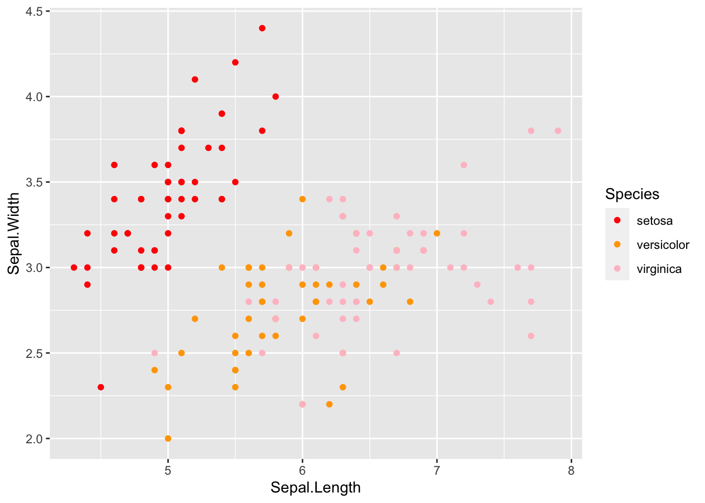
scales_layer$mappingAesthetic mapping:
* `x` -> `Sepal.Length`
* `y` -> `Sepal.Width`
* `colour` -> `Species`- Statistics: Mathematical transformations applied to the data before visualization, such as summary statistics or new variables. Histogram for example splits data into bins and counts observations.
stat_layer <- ggplot(data = iris, aes(x = Sepal.Length)) +
geom_histogram(bins = 20, color = "white")
stat_layer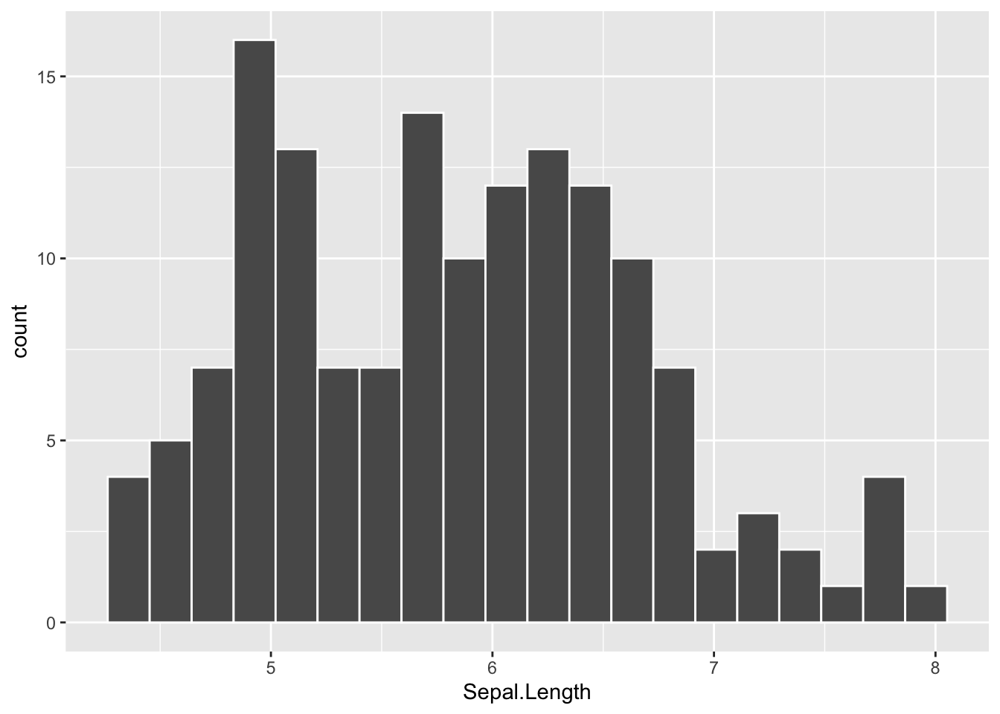
- Facets: Ways of dividing the data into subgroups and creating separate visualizations for each subgroup.
facets_layer <- geometry_layer + facet_wrap(vars(Species), ncol = 3)
facets_layer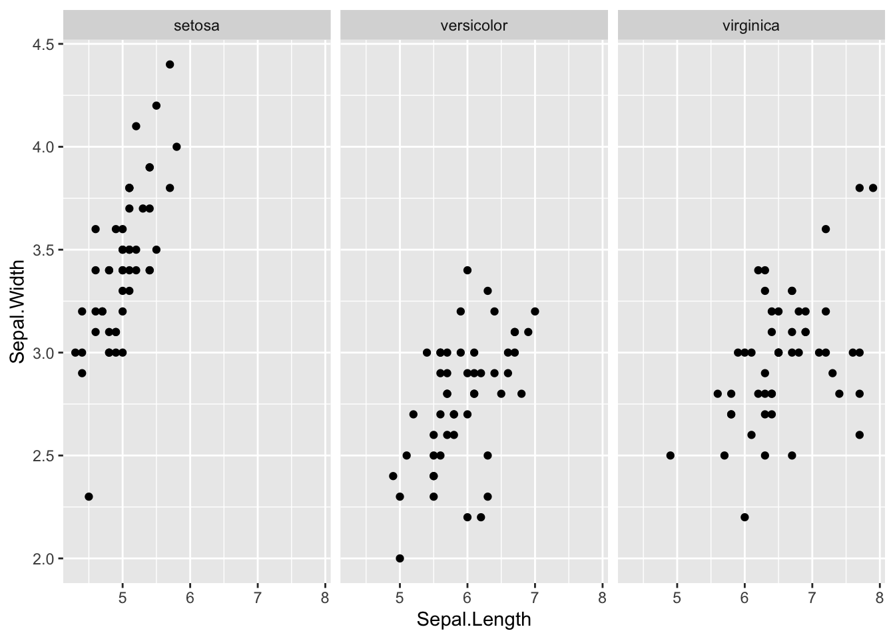
- Theme: Adding Polishing touches to your visual and making it look exactly the way you want.
theme_layer <- facets_layer + theme_minimal(base_size = 18) +
geom_point(size = 2, color = "#ffb86c") +
theme(plot.background = element_rect(fill = "#282a36", color = "#44475A"),
axis.text = element_text(color = "#f8f8f2"),
axis.title = element_text(color = "#f8f8f2"),
strip.text = element_text(color = "#f8f8f2"),
panel.grid.minor = element_blank(),
panel.grid.major = element_line(colour = "#44475a")
) +
labs(x = "Sepal Length", y = "Sepal Width")
theme_layer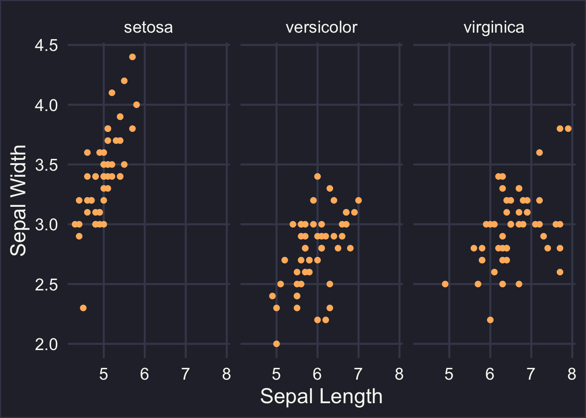
14.3 ggplot()
If you used R before then you are familiar with the default graphing function plot,hist, etc. ggplot2 has it own version of quickly making a graph qplot(). To learn about qplot() check out this vignette.
data_raven %>% pull(pr_correct) %>% hist() 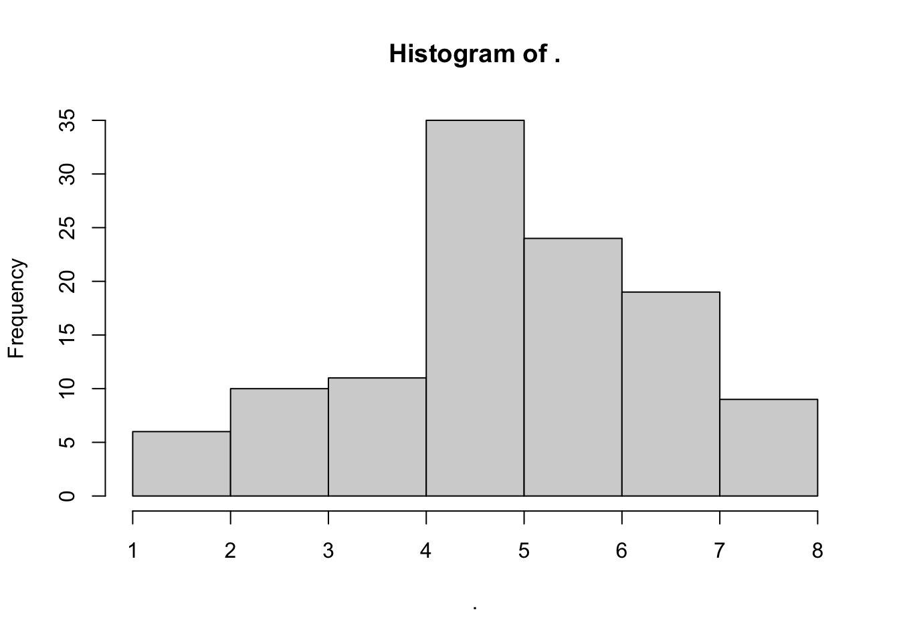
data_raven %>% qplot(pr_correct, data = ., geom = 'histogram', bins = length(unique(data_raven$pr_correct)))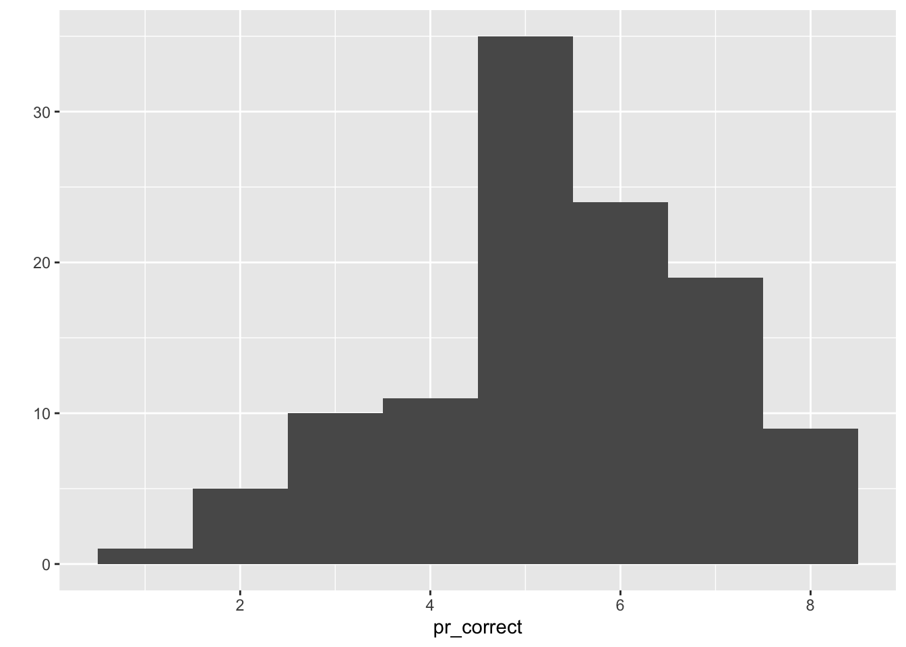
The ggplot() function sets up the basic structure of a plot, and additional layers, such as points, lines, and facets, can be added using + operator (like %>%, but for +). This makes it easy to understand, modify the code, and build complex plots by adding layers. This allows for easy creation of plots that reveal patterns in the data. In contrast, the basic R plotting functions and qplot() have a simpler and less expressive syntax, making it harder to create complex and multi-layered plots. Mastering ggplot() is well worth your time and effort as it will teach you how to think about graphs and what goes into building them. For example, let’s improve the histogram from earlier!
data_raven %>%
count(pr_correct) %>% # I prefer calculating statistics myself
ggplot(aes(x = as.factor(pr_correct), y = n)) + # We use aes to set x and y
geom_col(fill = "steelblue") +
theme_minimal(base_size = 15) +
theme(panel.grid = element_blank(),
panel.grid.major.y = element_line(linewidth = 0.5, linetype = 2, color = "grey")) +
labs(x = "Number of Correct Answers",
y = "Subject Count",
title = "Distribution of Correct Answers in Piece-rate Game")
Ah much better! We added labels, removed unnecessary grid lines, and added some color. If you want to learn more about ggplot check out ggplot2: Elegant Graphics for Data Analysis (Hadley 2016) and the cheatsheet.
Hadley, Wickham. 2016. Ggplot2. New York, NY: Springer Science+Business Media, LLC.
We can use an amazing package esquisse to build our plots with drag-and-drop!
# install.packages('esquisse')
library(esquisse)You can access esquisse by going to “Addins” in the top panel or with esquisser(your_data). Now go learn more about this package here.
14.4 Tips
14.4.1 group
Usually ggplot groups your data by one the aesthetics you provided such as color and fill; however, sometimes it fails to do so. When that happens it is worth specifying group argument on your own.
Notice how labels for years 2020, 2021, 2022 are all over the place.
Show the code
spending_plot_data %>%
ggplot(aes(x = year, y = n, fill = agency, label = agency)) +
geom_col(position="fill", show.legend = T) +
scale_fill_manual(
values = c("#5E5E5E", "#EF3B2C", "#2CA25F", "#006837", "#F7DC6F", "#00FFFF", "#FFC0CB")) +
theme_minimal() +
theme(legend.position = "none") +
labs(y = "Millions Spent", fill = "Department") +
geom_label( size = 3, position = position_fill(vjust = 0.5), fill = "white", alpha = 0.5)If we specify group aesthetic everything goes back to its place!
Show the code
spending_plot_data %>%
ggplot(aes(x = year, y = n, fill = agency, label = agency)) +
geom_col(position="fill", show.legend = T) +
scale_fill_manual(
values = c("#5E5E5E", "#EF3B2C", "#2CA25F", "#006837", "#F7DC6F", "#00FFFF", "#FFC0CB")) +
theme_minimal() +
theme(legend.position = "none") +
labs(y = "Millions Spent", fill = "Department") +
geom_label( aes(group = agency),size = 3, position = position_fill(vjust = 0.5), fill = "white", alpha = 0.5)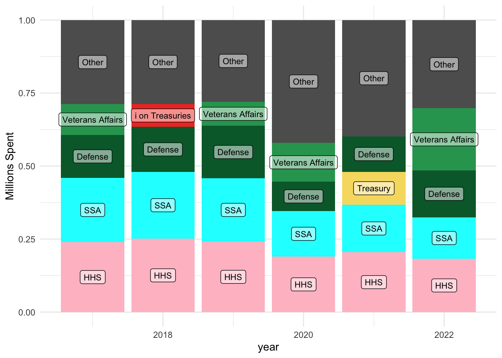
This error is very common in line charts too.
Show the code
group_line_data <- tibble(
measure = c(rep("hot",5),rep("cool",5)),
date = rep(seq(2000,2004, by = 1),2),
value = c(89,111,100,130,159,24,37,88,69,105)
) Show the code
group_line_data %>% ggplot (aes(x=date, y= value)) + geom_line() + theme (legend.position = "bottom",legend.title = element_blank()) + theme_minimal()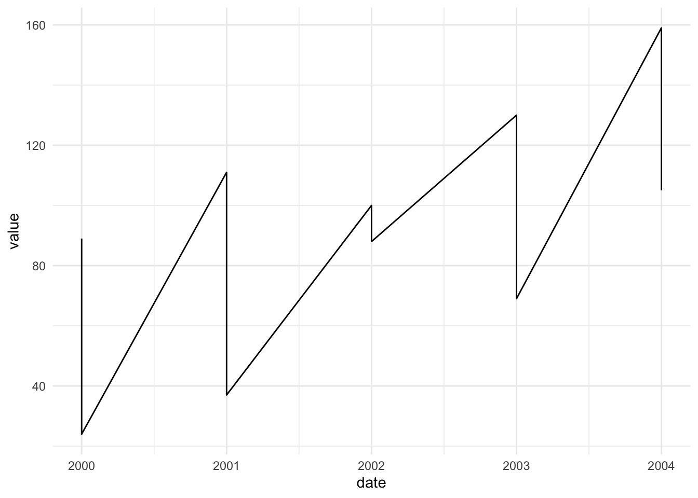
Show the code
group_line_data %>% ggplot (aes(x=date, y= value, group = measure)) + geom_line () + theme (legend.position = "bottom",legend.title = element_blank()) + theme_minimal()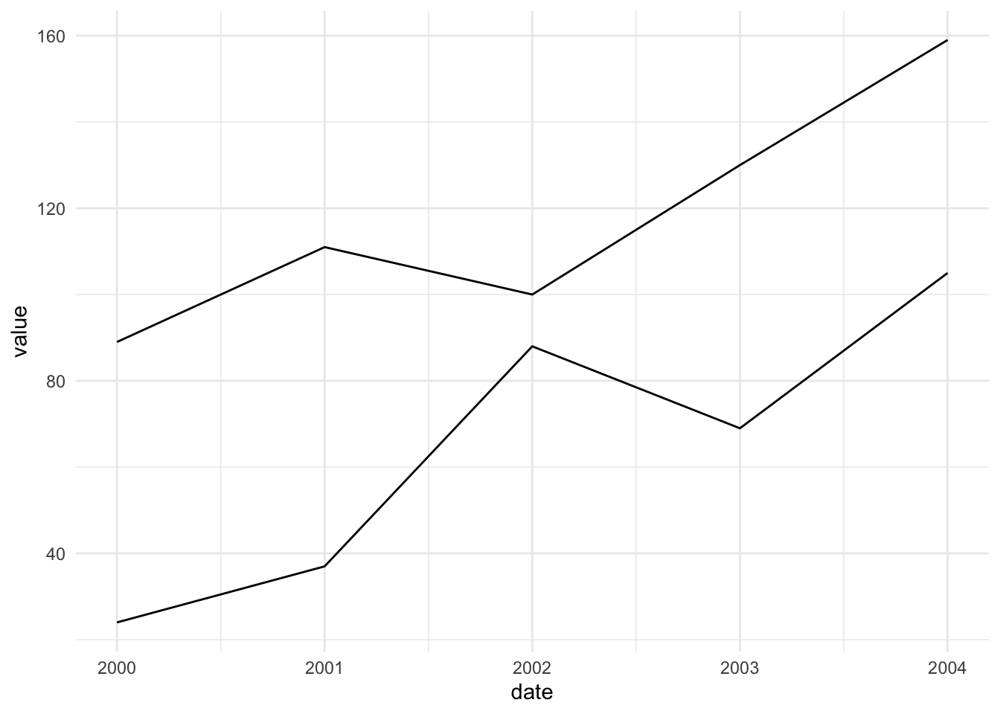